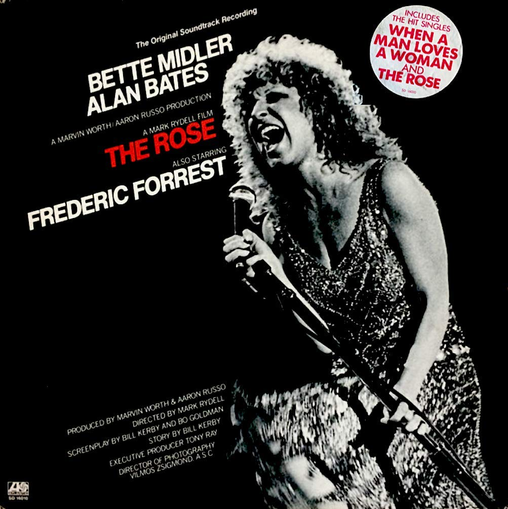
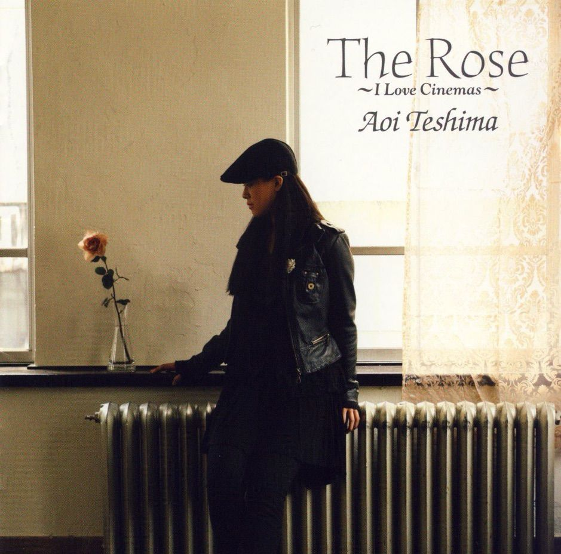

사랑에 대한 위로 - The Rose 가사 해설
게시: 2020-12-10T06:30:35+09:00
The Rose라는 노래는 배트 미들러(Bette Midler)가 자신이 주연한 같은 이름의 1979년 영화 The Rose의 엔딩 송으로 직접 불러서 유명해진 노래입니다. 제니스 조플린의 인생을 그린 이 영화는 저를 포함해서 아무도 본 사람이 없는 것 같습니다만 이 주제곡만큼은 매우 유명하지요. 원래 70~80년대 팝계의 분위기는 보통 가수가 직접 자신의 곡을 작사작곡하는 것입니다만, 이 노래는 배트 미들러가 쓴 것이 아닙니다. 배트 미들러도 가수이자 배우입니다만, 맥브룸(Amanda McBroom)이라는 상대적으로 무명인 가수이자 배우가 1977년에 작사작곡하여 이런저런 소무대에서 불렀던 곡입니다. 이 가수는 매니저가 밥 시거(Bob Seger) 스타일의 곡을 써보라는 요구를 받고 45분만에 이 곡을 급히 썼다는데, 쓰고나서 보니 연결부도 없고 후크 부분도 없어서 '이런 젠장'이라는 생각이 들었지만 그렇다고 더 고칠 부분도 없어서 그냥 그대로 불렀다고 합니다. 그러나 물건을 아무리 잘 만들어도 판매를 잘 해야 히트 상품이 되는 법이라, 맥브룸이 여기저기, 심지어 TV쇼우에서도 한번 불렀는데 아무도 알아봐주지 않았습니다. 그러다 배트 미들러가 영화 삽입곡으로 넣자 빌보드 차트 3위까지 올랐고, 결국 배트 미들러는 이 곡으로 그 해 바브라 스트라이샌드와 도나 섬머 등을 젖히고 그래미 상을 받았습니다. 그러나 영화를 위해 작곡된 곡은 아니었으므로 아카데미 음악상은 받지 못했답니다.


실은 저는 배트 미들러 버전은 (배트 미들러가 어떤 스타일의 가수인지 모르는 젊은 분들은 이 영화 포스터를 보고 대충 짐작하실 듯) 너무나 파워풀해서 그다지 좋아하지 않습니다. 이 곡은 라임이 정교하게 아주 잘 맞는 가사를 3번 반복하는 단순한 곡입니다만, 그 가사가 정말 사람에게 위로를 주는 그런 내용입니다. 이런 가사를 배트 미들러의 파워풀한 가창력으로 부르는 건 그다지 어울리지 않는 것 같아요. 하지만 송승헌 주연의 우리나라 2014년 영화 '인간중독'에 삽입된 일본 가수 테시마 아오이 버전은 정말 감성적이라 매우 좋아합니다. 이 가수는 일본 가수답게 영어 발음이 약간 이국적(??)인데, 특히 th 발음이 부정확하여 th보다는 z 발음이 납니다. 이건 일부러 그런 것 같다는 생각도 드는데, 영어를 못하는 제 귀에는 그 발음이 무척 감미롭습니다. 아래 유튜브에서 테시마의 곡을 감상하실 수 있습니다. youtu.be/RKJX6V4E1Vw

The Rose 장미 Some say love, it is a river, that drowns the tender reed Some say love, it is a razor, that leaves your soul to bleed Some say love, it is a hunger, an endless aching need I say love, it is a flower, and you, its only seed 어떤 이는 사랑이란 강이래요. 연약한 갈대를 익사시키지요. 어떤 이는 사랑이란 면도날이래요. 당신의 영혼을 피흘리게 해요. 어떤 이는 사랑이란 굶주림이래요. 끝없는 아픔을 주는 결핍이지요. 제겐 사랑이란 꽃이에요. 그리고 당신은 그것의 하나 뿐인 씨앗이고요. It's the heart afraid of breaking, that never learns to dance It's the dream afraid of waking, that never takes the chance It's the one who won't be taken, who cannot seem to give And the soul afraid of dying, that never learns to live 그건 상처받을 것이 두려워 춤추는 것을 배우려 하지 않는 마음이에요. 그건 깨어날 것이 두려워 기회를 잡지 않으려는 꿈이지요. 그건 받아들여지지도 않고 주려고 하지도 않는 것처럼 보여요. 그리고 그건 죽는 것이 두려워 사는 법을 배우려 하지 않는 영혼이에요. When the night has been too lonely and the road has been too long And you think that love is only for the lucky and the strong Just remember in the winter, far beneath the bitter snows Lies the seed, that with the sun's love in the spring becomes the rose 밤이 너무 외롭고 길은 너무 멀 때 그리고 사랑이란 운이 좋고 강한 사람들이나 갖는 거라는 생각이 들 때는 기억하세요 겨울날 쓰라린 눈 아래 깊은 곳에는 봄이 되어 태양의 사랑을 받으면 장미를 피우는 씨앗이 있다는 것을요